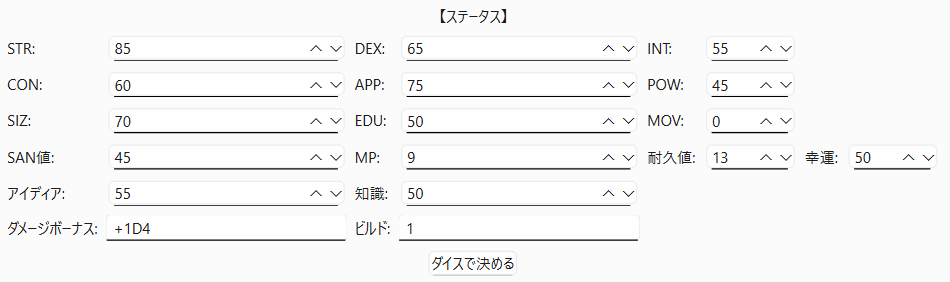

Ishizaki Tomoya / 石崎 智也
Portfolio
ポートフォリオサイトです！
扱っているプログラミング言語、自己紹介と作品を掲載しております！
About
石崎です。知能情報コースで、高専2年生やってます。
趣味は、読書、YouTube鑑賞とゲーム。
2年生になりプログラミングを始めました。
まだまだではございますが、ご覧いただければ幸いです。
Works
TRPG風のゲーム
Google.Colabで作成したTRPG風のゲームです。
2年生の前期期末テスト前に作成しました。
Scratchにて制作中のノベルゲーム
高専を舞台にしたゲームです。現在トレーラーが公開されています。
高専祭で出展する予定だったのですが、間に合わず、今現在も制作中です。
トレジャーハントゲーム
pygameで作成した自動生成のダンジョンで、目標金額を集めるゲームです。
2年生の12月～1月に作成しました。
下のMy Gamesで詳しく紹介しています。
TRPGキャラクターシート作成ツール
pyside6で作成した、7版COCキャラクターシート作成ツールです。
2年生の2月に作成しました。
制作時間:18時間以上
下のMy Gamesで詳しく紹介しています。
My Games
→ トレジャーハントゲーム
宝物を集め、30000G集めたらクリア!
操作説明
W/A/S/D: 移動
F: 休憩所へ移動 / 休憩所から戻る
B: 袋の中身を表示
V: 所持金の表示
R: アイテムの売却(休憩所でのみ)
G: アイテムの購入(休憩所でのみ)
タイル
黒のレンガ: 移動可能なタイル
溶岩 : 移動不可能なタイル
鏡 : 休憩所に移動
階段 : 形を変えたダンジョンに移動
宝箱
赤の宝箱 : 鍵がなくても開けられる
銀の宝箱 : 開けるには「シルバーチェストの鍵」が必要
黄金の宝箱: 開けるには「ゴールドチェストの鍵」が必要
フィールド
2種類のフィールド
・ダンジョン
 階段のタイルを踏むと形の変わるダンジョン。アイテムの入手、迷路の移動が出来ます。
階段のタイルを踏むと形の変わるダンジョン。アイテムの入手、迷路の移動が出来ます。
・休憩所
 ここでだけアイテムの売却、購入が出来ます。
ここでだけアイテムの売却、購入が出来ます。
売却・購入
休憩所でのみ売却・購入が可能
クリア画面
クリアタイムと所持金を表示
GitHubURL
→ TRPGキャラクターシート作成ツール
特徴
・キャラクターの基本情報（名前、職業、年齢、性別、出身地など）の管理
・ステータス（STR, DEX, INT など）の入力・自動算出機能
・職業技能・趣味技能の管理とポイント割り振り
・キャラクターの保存・ロード機能（JSONファイル）
・ダイスロールによる自動ステータス生成
操作説明
1.探索者情報
2.ステ―タス
ステータス。手動入力するか、ダイスロール機能で自動決定出来ます。
3.技能
職業技能・趣味技能を追加し、ポイントを割り振れます。
技能名を入力すれば自動的に初期値が入力されます。
職業技能ポイントの参照ステータスは職業技能表の右上から選べる。
4.保存
「保存」ボタンでキャラクターをJSONファイルとして保存します。
5.ロード
探索者を選択し、保存したキャラクターを復元します。
GitHubURL
Skills
Python言語
Arduino言語
Scratch
Git/GitHub
VSCode (venvによるPython開発)
ArduinoIDE
Deeds-DCS
MakeCode for micro:bit
Tinkercad
WSL (Windows Subsystem for Linux)
Contact
お問い合わせは、
メールにてお願いいたします。